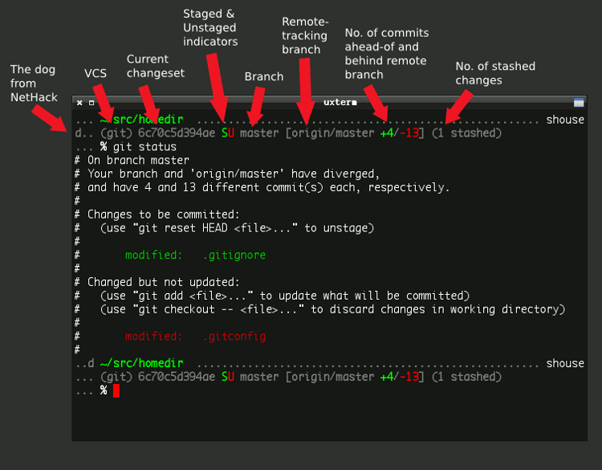

See also
I already talked at length about my Mercurial Zsh prompt. Well I should also show my Git prompt using the same, awesome VCS_Info system that is built into Zsh.
The code can be found on GitHub.
The required configuration for Git is a little lighter than for Mercurial:
zstyle ':vcs_info:*' enable git
zstyle ':vcs_info:git*:*' get-revision true
zstyle ':vcs_info:git*:*' check-for-changes true
# hash changes branch misc
zstyle ':vcs_info:git*' formats "(%s) %12.12i %c%u %b%m"
zstyle ':vcs_info:git*' actionformats "(%s|%a) %12.12i %c%u %b%m"
Like with Mercurial, I’m using hooks to customize the prompt just so. Activate both hooks with:
zstyle ':vcs_info:git*+set-message:*' hooks git-st git-stash
I find I really enjoy an at-a-glance reminder if the branch I’m working on is tracking a remote or not. If it is tracking a remote, it’s also a big time saver to see the difference between local and remote commits:
# Show remote ref name and number of commits ahead-of or behind
function +vi-git-st() {
local ahead behind remote
local -a gitstatus
# Are we on a remote-tracking branch?
remote=${$(git rev-parse --verify ${hook_com[branch]}@{upstream} \
--symbolic-full-name 2>/dev/null)/refs\/remotes\/}
if [[ -n ${remote} ]] ; then
# for git prior to 1.7
# ahead=$(git rev-list origin/${hook_com[branch]}..HEAD | wc -l)
ahead=$(git rev-list ${hook_com[branch]}@{upstream}..HEAD 2>/dev/null | wc -l)
(( $ahead )) && gitstatus+=( "${c3}+${ahead}${c2}" )
# for git prior to 1.7
# behind=$(git rev-list HEAD..origin/${hook_com[branch]} | wc -l)
behind=$(git rev-list HEAD..${hook_com[branch]}@{upstream} 2>/dev/null | wc -l)
(( $behind )) && gitstatus+=( "${c4}-${behind}${c2}" )
hook_com[branch]="${hook_com[branch]} [${remote} ${(j:/:)gitstatus}]"
fi
}
I tend to stash changes on a whim and forget about them. This handy reminder only shows up if there is a stash:
# Show count of stashed changes
function +vi-git-stash() {
local -a stashes
if [[ -s ${hook_com[base]}/.git/refs/stash ]] ; then
stashes=$(git stash list 2>/dev/null | wc -l)
hook_com[misc]+=" (${stashes} stashed)"
fi
}
Posted 497 days ago on 2010-05-24.